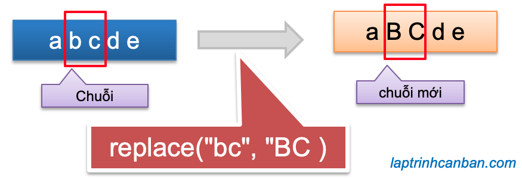
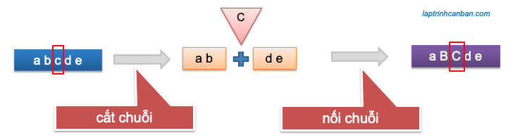

Hướng dẫn thay thế ký tự trong chuỗi JavaScript. Bạn sẽ học được cách thay thế ký tự trong chuỗi JavaScript bằng phương thức replace() sau bài học này.
Chúng ta có 6 phương pháp thay thế ký tự trong chuỗi JavaScript như sau:
- Thay thế lần xuất hiện đầu tiên của ký tự trong chuỗi JavaScript (replace)
- Thay thế toàn bộ ký tự trong chuỗi JavaScript (replace)
- Thay thế ký tự trong chuỗi JavaScript bằng chuỗi đặc biệt (replace và ký hiệu $)
- Thay thế ký tự trong chuỗi JavaScript tại vị trí bất kỳ (slice và toán tử +)
- Thay thế lần xuất hiện cuối cùng của ký tự trong chuỗi JavaScript (slice và lastIndexOf)
- Thay thế lần xuất hiện thứ n của ký tự trong chuỗi JavaScript(substring và for)
Ngoài ra, bằng cách ứng dụng việc thay thế ký tự trong chuỗi JavaScript bằng phương thức replace thì chúng ta cũng có thể tiến hành xóa ký tự trong chuỗi JavaScript.
- Xem thêm: Xóa ký tự trong chuỗi JavaScript
Phương thức replace() trong JavaScript
replace() là một phương thức của đối tượng String trong JavaScript, có tác dụng thay thế ký tự chỉ định trong chuỗi ban đầu bằng một chuỗi ký tự khác và tạo ra một chuỗi thay thế. Phép thay thế này sẽ không làm thay đổi chuỗi ban đầu.

Chúng ta sử dụng phương thức replace để thay thế ký tự trong chuỗi JavaScript với cú pháp sau đây:
str.replace( chuỗi cần thay thế , chuỗi thay thế )
Trong đó chuỗi cần thay thế sẽ được thay thế bởi chuỗi thay thế nếu nó tồn tại trong chuỗi str ban đầu.
Ví dụ cụ thể:
'Tôi ghét em'.replace('ghét', 'yêu'); //Tôi yêu em |
Chúng ta có thể chỉ định chuỗi cần thay thế bằng một ký tự, một chuỗi ký tự, hoặc là một biểu thức chính quy (regular expressions).
Với chuỗi thay thế new_str, chúng ta có thể chỉ định nó bởi một chuỗi thông thường, hoặc là một chuỗi đặc biệt bằng cách sử dụng thêm ký tự $.
Lưu ý là phương thức replace() về mặc định sẽ chỉ thay thế chuỗi đầu tiên được tìm thấy (tính từ đầu chuỗi ban đầu) mà thôi. Do đó nếu một chuỗi xuất hiện nhiều lần trong chuỗi ban đầu thì chỉ có lần xuất hiện đầu tiên của chuỗi đó được thay thế mà thôi.
Để có thể để thay thế toàn bộ các ký tự trong chuỗi, chúng ta cần phải sử dụng replace() kết hợp với một biểu thức chính quy (regular expressions) với chỉ định glocal flag. Chúng ta sẽ cùng làm rõ chúng trong các phần dưới đây.
Thay thế ký tự trong chuỗi JavaScript bằng phương thức replace()
Chúng ta sử dụng phương thức replace() theo cách thông thường để thay thế lần xuất hiện đầu tiên của ký tự trong chuỗi JavaScript.
Ví dụ, chúng ta thay thế chuỗi red xuất hiện đầu tiên trong chuỗi bởi chuỗi ORANGE bằng replace() như sau:
let str = 'red hat and red book'; |
Bạn có thể thấy, chuỗi red tuy xuất hiện 2 lần trong chuỗi ban đầu, nhưng chỉ có lần xuất hiện đầu tiên của nó trong chuỗi ban đầu được thay thế bởi chuỗi thay thế ORANGE mà thôi.
Chúng ta cũng có thể chỉ định chuỗi cần thay thế bằng một biểu thức chính quy (regular expressions). Khi đó phương thức replace() sẽ tiến hành tìm trong chuỗi ban đầu tất cả các chuỗi có thể biểu diễn được bởi biểu thức chính quy này, và tiến hành thay thế lần tìm thấy đầu tiên.
Ví dụ chúng ta có thể thay thế ký tự xuống dòng đầu tiên trong chuỗi thông qua biểu thức chính quy /\n/ như sau:
let str = 'Tôi\nyêu\nem'; |
Lưu ý là phương thức replace() sẽ không làm thay đổi chuỗi ban đầu mà chỉ copy toàn bộ chuỗi đó, tiến hành thay thế, và lưu kết quả dưới dạng một chuỗi thay thế mà thôi. Hãy thử kiểm tra chuỗi ban đầu trước và sau khi thay thế ký tự bởi replace() như sau:
let str = 'abcde'; |
Bạn có thể thấy chuỗi ban đầu không hề bị thay đổi rồi phải không nào? Do đó nếu bạn muốn sử dụng lại kết quả của phương thức replace() trong JavaScript, hãy nhớ gán kết quả đó vào một biến để tái sử dụng sau này nhé.
Thay thế toàn bộ ký tự trong chuỗi JavaScript bằng replace()
Về mặc định thì phương thức replace sẽ chỉ thay thế ký tự trong lần nó xuất hiện đầu tiên trong chuỗi ban đầu.
Tuy nhiên bằng cách sử dụng replace() kết hợp với một biểu thức chính quy (regular expressions) với chỉ định glocal flag, chúng ta hoàn toàn có thể thay thế toàn bộ ký tự trong chuỗi JavaScript ban đầu.
Ví dụ, chúng ta sẽ xóa toàn bộ các ký tự city trong chuỗi bigcityboy như sau:
str = "big city boy big city girl"; |
Lưu ý là nếu chúng ta không chỉ định glocal flag trong biểu thức chính quy thì phương thức replace() cũng chỉ có thể thay thế ký tự trong lần xuất hiện đầu tiên của nó mà thôi.
str = "big city boy big city girl"; |
Ưng dụng khả năng này của phương thức replace() khi sử dụng với biểu thức chính quy ở định dạng glocal, chúng ta có thể tiến hành Xoá toàn bộ khoảng trắng trong chuỗi JavaScript.
- Xem thêm: Xoá khoảng trắng trong chuỗi JavasSript
Thay thế ký tự trong chuỗi JavaScript bằng chuỗi đặc biệt | ký hiệu $
Chúng ta có thể sử dụng một chuỗi đặc biệt để chỉ định chuỗi thay thế khi sử dụng phương thức replace(), thông qua việc sử dụng ký hiệu đô la $.
Các chuỗi được bắt đầu bởi ký hiệu này hàm chứa các ý nghĩa đặc biệt như bảng sau đây:
| Ký hiệu | Ý nghĩa |
|---|---|
$& | chuỗi được khớp |
$` | phần trước của chuỗi được khớp trong chuỗi ban đầu |
$' | phần sau của chuỗi được khớp trong chuỗi ban đầu |
$$ | ký tự $ |
$1, $2,... | Thứ tự chuỗi được khớp trong biểu thức chính quy |
Hãy xem các ví dụ sau đây để hiểu rõ hơn:
Ví dụ 1: thay thế chuỗi được khớp
let str = 'Honda Kiyoshi Suzuki'; |
Ở ví dụ này chuỗi cần thay thế là Kiyoshi. Do $& có ý nghĩa là chuỗi được khớp (trong trường hợp này là chuỗi cần thay thế), nên kết quả $&Chis' là sự kết hợp của chuỗi này với chuỗi Chis để tạo ra chuỗi thay thế là KiyoshiChis.
Ví dụ 2: thay thế chuỗi được khớp bởi phần trước nó trong chuỗi ban đầu
let str = 'Honda Kiyoshi Suzuki'; |
Ở ví dụ này chuỗi cần thay thế là Kiyoshi. Do $` có ý nghĩa là phần trước chuỗi được khớp (trong trường hợp này là chuỗi cần thay thế), nên kết quả $` là sự kết hợp của phần trước chuỗi này trong chuỗi ban đầu (là chuỗi 'Honda ' ) với chuỗi Chis để tạo ra chuỗi thay thế mới là 'Honda Chis'.
Ví dụ 3: thay thế chuỗi được khớp bởi phần sau nó trong chuỗi ban đầu
let str = 'Honda Kiyoshi Suzuki'; |
Ở ví dụ này chuỗi cần thay thế là Kiyoshi. Do $' có ý nghĩa là phần sau chuỗi được khớp (trong trường hợp này là chuỗi cần thay thế), nên kết quả $'Chis là sự kết hợp của phần sau chuỗi này trong chuỗi ban đầu (là chuỗi ' Suzuki' ) với chuỗi Chis để tạo ra chuỗi thay thế mới là ' SuzukiChis'.
Ví dụ 4: chỉ định thứ tự chuỗi được khớp trong biểu thức chính quy
Ví dụ, chúng ta có thể thay thế chuỗi ngày sinh nhật thông qua biểu thức chính quy như sau:
let birthday = 'Ngày sinh : 1994-10-03'; |
Ở ví dụ này, có 3 chuỗi được khớp trong biểu thức chính quy, và tương ứng với nó là ba chuỗi đặc biệt đại điện $1,$2,$3 trong chuỗi thay thế. Bằng cách tùy chỉnh với chuỗi đại điện mà chúng ta có thể thay đổi ký tự tại vị trí tương ứng trong chuỗi cần thay thế.
Thay thế ký tự trong chuỗi JavaScript tại vị trí bất kỳ
Do trong JavaScript không tồn tại phương thức hay hàm nào giúp chúng ta có thể thay thế ký tự trong chuỗi JavaScript tại vị trí chỉ định bất kỳ, do đó chúng ta cần phải kết hợp nhiều xử lý khác nhau mới có thể làm được điều này.
Một phương pháp đơn giản và hay được sử dụng nhất ở đây đó là, chúng ta sẽ tách chuỗi ban đầu tại vị trí chỉ định để tạo ra 2 chuỗi con (không bao gồm ký tự cần thay thế), và sau đó sử dụng phương pháp nối chuỗi trong JavScript để nối 2 chuỗi này lại với ký tự thay thế.

Chúng ta sẽ sử dụng cú pháp tổng quát như sau:
str.slice(0,n) + newstr + str.slice(n+1)
Trong đó str là chuỗi ban đầu, newstr là ký tự thay thế, và n là vị trí cần thay thế ký tự trong chuỗi str.
Ví dụ cụ thể, chúng ta thay thế ký tự có vị trí index bằng 5 trong chuỗi ban đầu bởi một ký tự khác như sau:
let str = '01234567'; |
Các xử lý ở trên có thể được viết rõ ràng từng bước như sau:
let str = '01234567'; |
Thay thế lần xuất hiện cuối cùng của ký tự trong chuỗi JavaScript
Để thay thế lần xuất hiện cuối cùng của ký tự trong chuỗi JavaScript, trước hết chúng ta cần phải tìm ra vị trí xuất hiện cuối cùng của ký tự chỉ định trong chuỗi ban đầu, và sau đó thì ứng dụng cách thay thế ký tự tại vị trí bất kỳ mà Kiyoshi vừa giới thiệu ở trên.
Để tìm ra vị trí xuất hiện cuối cùng của ký tự trong chuỗi ban đầu, chúng ta có thể sử dụng tới phương thức lastIndexOf() mà Kiyoshi đã giới thiệu trong bài viết dưới đây:
Chúng ta sẽ sử dụng cú pháp tổng quát như sau:
str.slice(0,n) + newstr + str.slice( n + oldstr.length)
Trong đó str là chuỗi ban đầu, newstr là ký tự thay thế, và oldstr là ký tự cần thay thế ký tự trong chuỗi str.
Ví dụ cụ thể, chúng ta sẽ thay thế một ký tự tại lần xuất hiện cuối cùng của nó trong chuỗi ban đầu như sau:
let str = 'Good School'; |
Tương tự, chúng ta cũng có thể thay thế một chuỗi ký tự tại lần xuất hiện cuối cùng của nó trong chuỗi ban đầu như sau:
let str = 'Good School'; |
Thay thế lần xuất hiện thứ n của ký tự trong chuỗi JavaScript
Tương tự như trên thì để thay thế lần xuất hiện thứ n của một hoặc một chuỗi ký tự trong chuỗi JavaScript, trước hết chúng ta cần phải tìm ra index trong lần xuât hiện thứ n của ký tự chỉ định đó trong chuỗi ban đầu, và sau đó sẽ thay thế ký tự này bằng ký tự mới tại vị trí index tìm thấy.
Tuy nhiên thì chúng ta có thể sử dụng và cải tiến lại hàm tìm vị trí xuất hiện thứ n của ký tự trong chuỗi ban đầu mà Kiyoshi đã giới thiệu trong bài Tìm ký tự trong chuỗi JavaScript (indexOf, lastIndexOf) và biến nó thành một hàm thay thế lần xuất hiện thứ n của ký tự trong chuỗi JavaScript như sau đây. Bạn cũng có thể tìm ví dụ gốc của hàm này tại developer.mozilla.
function replaceString(oldS, newS, fullS, n) { |
Ví dụ, chúng ta gọi hàm trên để thay thế một hoặc một chuỗi ký tự tại lần xuất hiện thứ n của nó trong chuỗi ban đầu như sau:
replaceString('oo','ABC','Good School',2) |
Một số cách dùng khác của phương thức replace() trong JavaScript
Sử dụng replace() để xoá ký tự trong chuỗi JavaScript
Về phần này thì Kiyoshi đã có hẳn một chuyên đề riêng rồi, bạn có thể tham khảo tại bài viết:
Ví dụ cụ thể, chúng ta có thể sử dụng relace với regular expressions để loại bỏ khoảng trắng trong chuỗi JavaScript như sau:
let str = ' I Love You '; |
Bạn có thể tham khảo các phương pháp khác để xoá khoảng trắng trong chuỗi JavaScript tại bài sau:
Thay thế khoảng trắng liên tiếp bằng khoảng trắng đơn trong chuỗi JavaScript
Cũng giống như mã lệnh dùng để loại bỏ khoảng trắng trong chuỗi JavaScript ở trên, tuy nhiên thay vì chỉ định ký tự thay thế là một ký tự trống thì chúng ta sẽ sử dụng khoảng trắng.
Ví dụ cụ thể:
let str = ' I Love You '; |
Tổng kết
Trên đây Kiyoshi đã hướng dẫn bạn cách thay thế ký tự trong chuỗi JavaScript rồi. Để nắm rõ nội dung bài học hơn, bạn hãy thực hành viết lại các ví dụ của ngày hôm nay nhé.
Và hãy cùng tìm hiểu những kiến thức sâu hơn về JavaScript trong các bài học tiếp theo.
URL Link
HOME › học javascript - lập trình javascript cơ bản>>02. chuỗi trong javascript